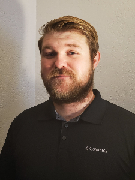

Henry Funk

I worked for years as a Wilderness Guide in the summer, Environmental Educator in the fall and spring, and Snowboard Instructor in the winter. Life was good. In search of a more sustainable career path, I made my way back to the Pacific Northwest to work for Tesla as a sales rep in their Seattle showroom. The office views aren’t nearly as good, but I’m able to continue working towards a cleaner and greener tomorrow thanks to Tesla’s unique mission. As more and more people buy Tesla’s products directly through the website, I long to gain the skills needed to better embrace this ‘online-only’ purchase culture. I hope to be able to educate many more people about the benefits of electric transportation and solar energy through web platforms, rather than relying on foot traffic. Cue CodeFellows!
Kat Gonzalez
Kat Gonzalez is a Navy Veteran from the East Coast. She now lives in Washington with her family, where they have a small farm.
Cody Carpenter
My name Cody, I'm a software devoloper based out of seattle. I found a love for coding after spending 8 years in the army working in the IT field, it started as a hobby modding video games which later grew into a passion for creating, I hope to get the skills needed to bring my ideas to life.
Brandon Gonzalez

Rookie Software developer our of plympia WA, US Army veteran with a passion of coding. Raised in Cleveland,Ohio. My goals are to finish out the code fellows program and gain employment with a company that has many passionate indivduals to share a workspace with